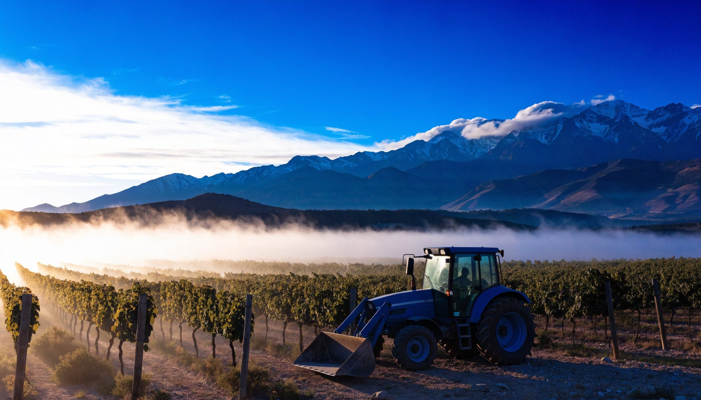
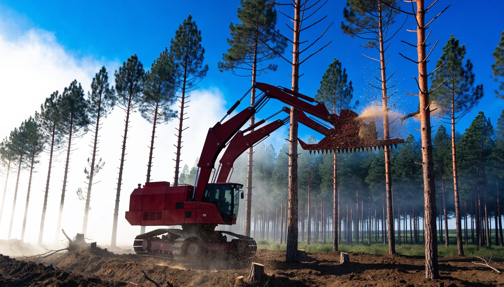
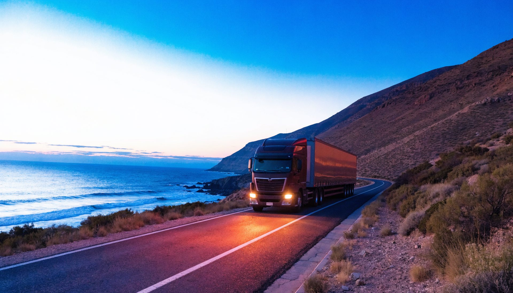
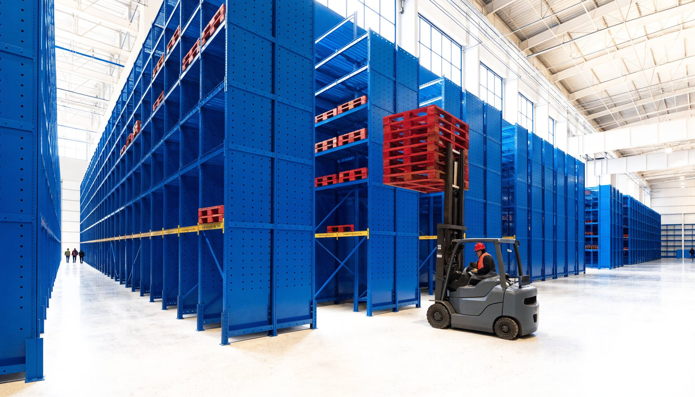
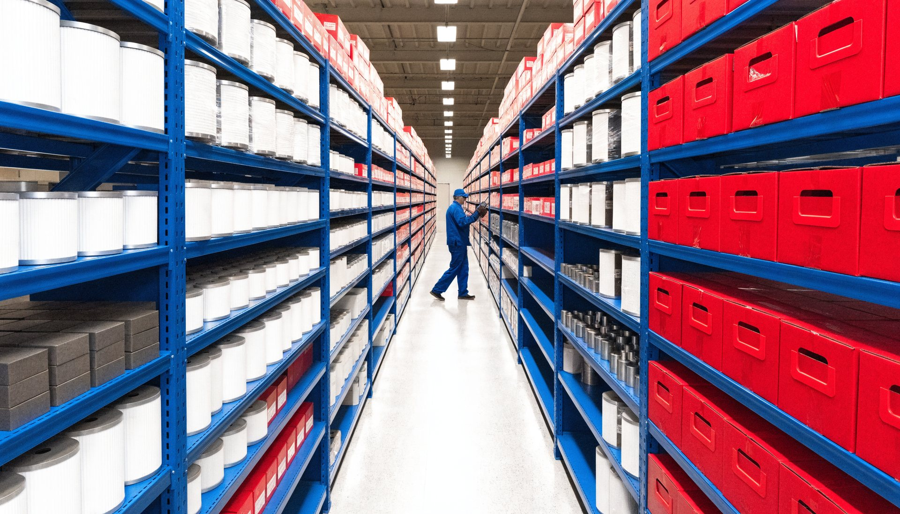
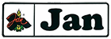
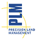
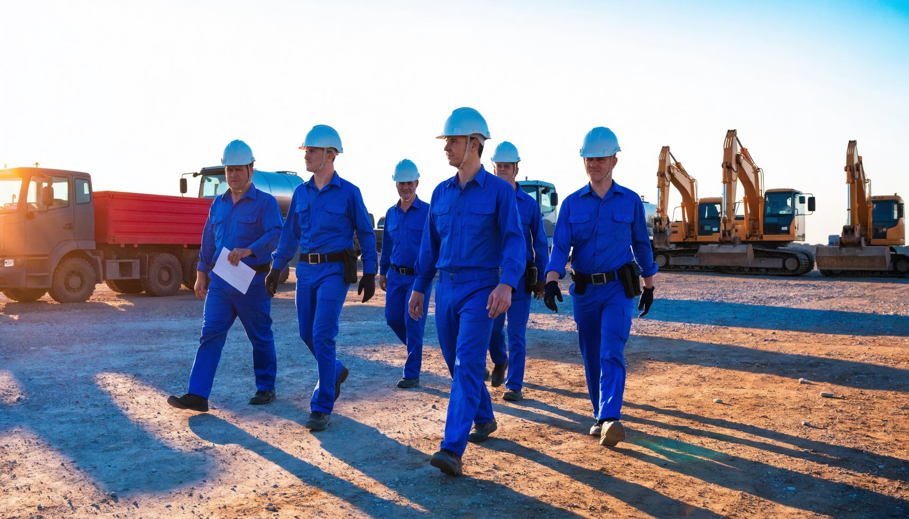
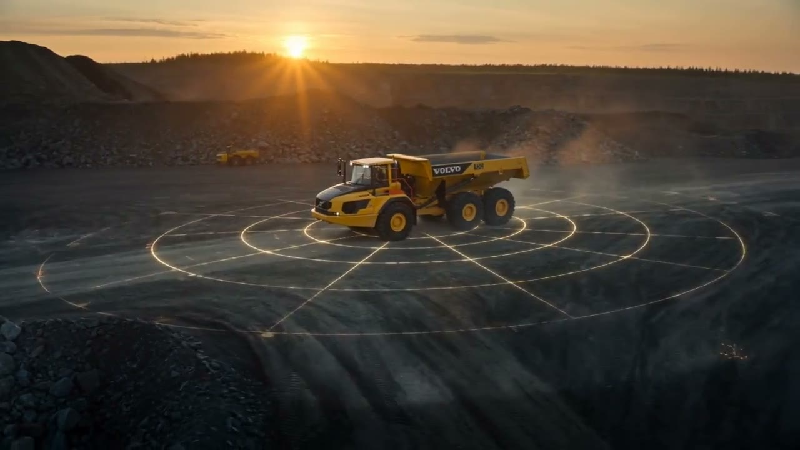

Minería
Equipos para las faenas más exigentes del país, con servicio en terreno y monitoreo remoto de flota.
Volvo CEManitouNew Holland ConstructionSandvikMDS

Representante exclusivo de camiones y maquinaria de marcas con prestigio a nivel mundial, con una gama completa de soluciones diseñadas para operar en minería, construcción, agro, forestal, transporte, industria y puertos, en los diversos lugares geográficos y etapas productivas de Chile.
Brindar día a día un trabajo oportuno y de calidad, aportando valor a nuestros clientes, comunidades y colaboradores.
Soluciones para cada segmento, diseñadas para maximizar la productividad de tu negocio.
Equipos para las faenas más exigentes del país, con servicio en terreno y monitoreo remoto de flota.
Una gama completa para construcción y obras civiles, gracias a una red de servicio a nivel nacional.

Más de 126 años de New Holland apoyando a cinco generaciones de agricultores, y la agricultura de precisión de PLM.

Cosecha y procesamiento forestal con equipos diseñados para el bosque del sur.

Camiones y buses para carga y pasajeros, con repuestos TRP y una división que posicionó a la marca entre las mejores del mercado chileno.

Equipos logísticos Toyota en venta y arriendo a largo plazo, y generación de energía Himoinsa.

Manipulación de contenedores y carga a granel en los puertos de Chile.

Tienda online BeParts para camiones y maquinaria, neumáticos y lubricantes.






Volvo CEToyotaKalmarSandvikEl grupo Sigdo Koppers participa en ingeniería y construcción, puertos, transporte ferroviario, fragmentación de roca, bolas de molienda y en la representación, distribución y arriendo de maquinaria. SKC es su brazo de maquinaria y camiones.
Nuestro fin es adoptar una cultura de mejora continua a través del desarrollo de las capacidades de las personas: pequeños cambios que ayuden a la eliminación de desperdicios.

Casa matriz en Av. Eduardo Frei Montalva 15800, Lampa, Santiago. Doce oficinas regionales en Chile.
